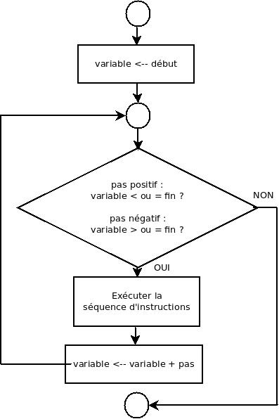

On va indiquer combien de fois la tâche doit être répétée. Cela se fait au travers d’une variable de contrôle dont la valeur va évoluer à partir d’une valeur de départ jusqu’à une valeur finale.
En pseudo-code :
pour variable de début à fin [par pas] faire
séquence d’instructions à exécuter
fin pour
est équivalent à
variable ← début
tant que variable ≤ fin faire
séquence d’instructions à exécuter
variable ← variable + pas // ou variable ← variable + 1 si le pas est omis.
fin tant que
Dans ce type de structure, début,
fin et pas
peuvent être des constantes, des variables ou
des expressions (le plus souvent à valeurs entières mais on admettra parfois des réels).
Le pas est facultatif, et généralement omis (dans ce cas, sa valeur par défaut est 1).
Ce pas est parfois négatif, dans le cas d’un compte à rebours,
par exemple pour n de 10 à 1 par -1.
pas est positif,
la boucle s’arrête lorsque la variable
dépasse la valeur de fin.
pas négatif,
la boucle s’arrête lorsque la variable
prend une valeur plus petite que la valeur de fin.
On considérera qu’au cas (à éviter) où
début est strictement supérieur à fin
et le pas est positif, la séquence d’instructions n’est
jamais exécutée (mais ce n’est pas le cas dans tous les langages de programmation
!).
début est strictement inférieur à fin
mais avec un pas négatif.
Attention de ne pas modifier dans la séquence d’instructions une des variables de contrôle
début, fin ou pas !
Il est aussi fortement déconseillé de modifier « manuellement »
la variable
au sein de la boucle pour.
Il ne faut pas l’initialiser en début de boucle, et ne pas s’occuper de sa modification,
l’instruction variable ← variable + pas étant automatique
et implicite à chaque étape de la boucle.
Il est aussi déconseillé d’utiliser variable à la sortie
de la structure pour sans lui affecter une nouvelle valeur.

Par exemple :
// Affiche les nombres de 1 à 10.
module compterJusque10 () // version avec pour
nb : entier
pour nb de 1 à 10 faire // par défaut le pas est de 1
afficher nb
fin pour
fin module
On affiche uniquement les nombres inférieurs (pas strictement) à n.
// Reçoit un nombre et affiche les nombres de 1 à ce nombre.
module afficherN(n↓ : entier)
nb : entier
pour nb de 1 à n faire
afficher nb
fin pour
fin module
On affiche uniquement les nombres pairs jusqu’à 10.
// Reçoit un nombre et affiche les nombres pairs jusqu’à ce nombre.
// n : limite des nombres à afficher.
Exemple : si n vaut 10, les nombres pairs de 1 à 10 sont : 2, 4, 6, 8, 10.
module afficherPair (n↓ : entier)
nb : entier
pour nb de 2 à n par 2 faire
afficher nb
fin pour
fin module
On affiche uniquement les nombres pairs jusqu’à la limite n.
// Reçoit un nombre et affiche les nombres pairs jusqu’à ce nombre.
// n : limite des nombres à afficher.
// Exemple : si n vaut 10, les nombres pairs de 1 à 10 sont : 2, 4, 6, 8, 10.
module afficherPair (n↓ : entier)
i: entier
pour i de 1 à n DIV 2 faire
afficher 2 * i
fin pour
fin module
On affiche les n premiers nombres pairs.
// Reçoit un nombre et affiche ce nombre de nombres pairs.
// n: le nombre de nombres à afficher.
// Exemple : si n vaut 10, les 10 premiers nombres pairs sont : 2, 4, 6, 8, 10, 12, 14, 16, 18, 20.
module afficherPair ()
i : entier
pour i de 1 à n faire
afficher 2 * i
fin pour
fin module
L’utilisateur indique le nombre de termes au départ.
// Lit des valeurs entières et retourne la somme des valeurs lues.
module sommeNombres() → entier
nbValeurs : entier // nb de valeurs à additionner
valeur : entier // un des termes de l’addition
somme : entier // la somme
i : entier // itérateur
somme ← 0 // la somme se construit petit à petit. Elle vaut 0 au départ
lire nbValeurs
pour i de 1 à nbValeurs faire
lire valeur
somme ← somme + valeur
fin pour
retourner somme
fin module